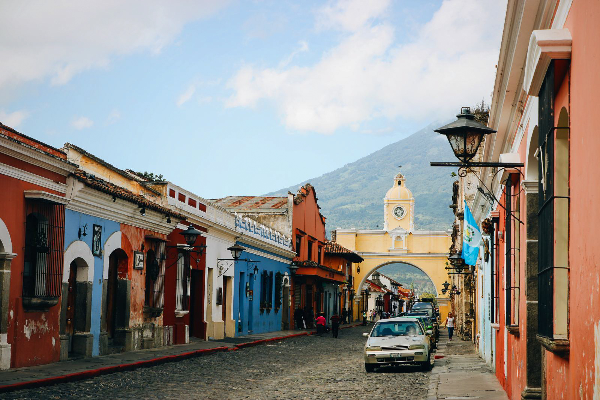

rateurs
rateursguatemala
Nous sommes au mois de juin. Nos backpacks sont alignés en rang d’oignon dans notre entrée. Le guide du Guatemala, la dernière édition du Lonely Planet, traîne dans un coin de l’appartement. Le départ est proche. On s’impatiente. Cette fois-ci, on part en Amérique Centrale à la découverte d’une destination alliant randonnée, immersion en pleine nature et découverte culturelle. Car pour une fois, on part à trois : Célia, Evan, mon frère de quinze ans et moi. Alors il a fallu trouver le pays qui répondrait à nos envies d’aventure mais aussi aux envies de farniente – et de baignade – d’Evan. Avec ses volcans en activité, ses cenotes et ses cités mayas dissimulées en pleine jungle, le Guatemala coche pas mal de cases ! Vous trouverez dans cet article notre itinéraire de voyage, les idées de randonnée à parcourir mais aussi nos conseils pour organiser un voyage au Guatemala.

NOTRE ITINÉRAIRE AU GUATEMALA
ANTIGUA LA SUPERBE
En arrivant par avion à Guatemala City, nous ne nous sommes pas attardés bien longtemps. En effet, la capitale guatémaltèque n’est pas réputée pour sa sécurité. Afin de ne pas perdre de temps, nous avons réservé auprès de notre hôtel un transfert en navette vers Antigua, une cité coloniale située à 50 minutes de l’aéroport international La Aurora. Entourée de volcans, Antigua mérite à elle seule le déplacement pour sa situation exceptionnelle, ses demeures aux façades colorées et ses patios dissimulés derrière d’épaisses portes en bois massif. C’est une ville où il fait bon vivre même si elle porte les stigmates du passé. Il n’est pas rare de découvrir au détour d’une ruelle pavée les ruines d’une ancienne église détruite par des tremblements de terre au cours des siècles passés. On a aimé flâner près de son ancien lavoir, monter jusqu’au Cerro de la Cruz pour profiter du panorama sur la ville, découvrir les ruines de son ancienne cathédrale et déjeuner à Caoba Farms. Située à dix minutes de marche du centre-ville, Caoba Farms propose une expérience culinaire en plein air dites “de la terre à la table”. On déjeune des spécialités locales cultivées sur place dans un jardin ombragé à proximité des potagers et des serres de la ferme. Nous aurons passé quatre jours complets à Antigua ce qui nous aura permis de prendre vraiment notre temps pour découvrir la ville mais aussi de programmer deux excursions vers le volcan Pacaya et l’Acatenango.
L’AVENTURE, LA VRAIE, A SEMUC CHAMPEY
Après notre séjour à Antigua, nous avons emprunté une navette pour rejoindre Lanquin en plein coeur du Guatemala. Le trajet jusqu’à Lanquin est une épopée à lui seul et il nous aura fallu environ dix heures, et beaucoup de patience de la part d’Evan, pour parvenir à bon port. Concrètement, Lanquin ne regorge pas d’activité – même s’il est possible de faire du tubing dans la rivière – mais c’est le point de départ des Jeeps qui mènent au parc naturel de Semuc Champey, un lieu plutôt extraordinaire au milieu de la jungle où l’on se baigne dans des cascades et des vasques naturelles. A Semuc Champey, l’eau a une couleur vert turquoise et la forêt résonne des cris des singes hurleurs. Une journée suffit pour profiter de Semuc Champey. Il est par ailleurs totalement possible d’organiser par soi-même sa visite. Pour cela, il suffit de grimper dans l’un des 4×4 qui stationnent dans la ville. Le trajet jusqu’à Semuc Champey dure environ 45 minutes. Si vous souhaitez profiter plus longtemps du parc naturel, sachez à proximité, de nombreux lodges et hostiles ont vu le jour.
A Lanquin, nous avons choisi de séjourner à l’écart de la ville dans la famille d’Hector. Ce dernier tient une plantation de cacao et de cardamome au sein de laquelle il a construit des cabanes, d’une grande simplicité, dans un total respect de l’environnement. L’épouse d’Hector cuisine pour leurs hôtels des plats typiques du Guatemala. La nuit coûte environ 27€ et l’hébergement se réserve sur AirBnB. Allez-y les yeux fermés ! L’endroit est d’un calme paradisiaque.
FLORES ET TIKAL, IMMERSION AUX PORTES DU MONDE MAYA
L’île de Flores se trouve dans la région du Petén, au beau milieu du lac Petén Itza. L’île est charmante, calme, colorée et… entièrement dédiée au tourisme. C’est le point de départ des bus en direction du Belize, le pays voisin. Pour nous, Flores était l’étape “farniente” de notre voyage. Un compromis pour permettre à Evan de se baigner et de se reposer – après avoir enduré la grêle sur l’Acatenango et les réveils au beau milieu de la nuit pour apercevoir les volcans en éruption autour d’Antigua. Mais farniente ne rime pas forcément avec “inactivité” ! Le premier jour, nous avons loué trois kayaks afin d’aller nous baigner dans différentes plages cachées sur des îles voisines du lac tandis que le deuxième jour, nous sommes partis nous baigner dans une cenote, au beau milieu de la mangrove, nommée “El Crater Azul”.
Deux jours suffisent pour profiter pleinement de Flores. Alors à l’aube du troisième jours, nous avons grimpé à bord d’une navette en direction de Tikal, le plus grande cité du monde maya. Afin de profiter pleinement du site et passer un peu de temps déconnectés de tout au coeur de la jungle, nous avons réservé une nuit au Tikal Jungle Lodge, un hôtel situé à l’entrée du parc. Séjourner dans le parc nous a permis de profiter du site en mode “slow travel” et de (re)découvrir les plus beaux sites du parc au petit matin sans la foule. Pour les petits budgets, le Jungle Lodge propose aussi un hostel.

LES RANDONNÉES DU GUATEMALA
Après une première randonnée à la découverte du volcan Erta Alé en Ethiopie, on mourait d’envie de revivre une expérience similaire en Amérique Centrale. Bivouaquer à plus de 4000 mètres d’altitude, assister à l’entrée des volcans en éruption, faire griller des chamallows au-dessus d’un feu de camps… Clairement, c’est à cause de ses volcans en activité comme le Pacaya ou El Fuego que nous avons finalement choisi le Guatemala. Mais niveau randonnée, la région du Petén n’est pas en reste puisqu’il est possible de s’enfoncer plusieurs jours au coeur de la jungle afin de découvrir les cités mayas les plus confidentielles.
LE VOLCAN PACAYA
Il est deux heures du matin lorsque Luis, de l’agence Wicho and Charlie’s Tour, vient nous récupérer au pied de notre hostel. J’ai les yeux encore tout ensommeillés et je m’endors comme sur masse entre Evan et Célia à l’arrière de la Jeep. Il nous faut moins de deux heures pour parvenir au pied du sentier menant au volcan Pacaya. Il fait encore nuit noire, aussi on allume nos frontales et on se met en marche. L’ascension n’est pas très compliquée. Le Pacaya est une randonnée accessible à tous les randonneurs. Il nous faut une heure et demie pour apercevoir les coulées de lave du volcan et nous en approcher à un peu moins de dix mètres. La lave glisse lentement le long des pentes du volcan. Elle crépite. Parfois quelques pierres se détachent brusquement et dévalent les pentes, nous obligeant aussitôt à reculer. Mais l’expérience est incroyable et Evan, adolescent plutôt peu loquace lâche même un “c’est trop stylé”.
LE VOLCAN ACATENANGO
J’attendais avec impatience notre départ pour l’Acatenango. S’il y a une randonnée à ne pas manquer au Guatemala, c’est bien celle-là ! Notre excursion dure deux jours. Vers huit heures du matin, on retrouve notre guide devant l’agence Ox Expeditions située dans une petite rue pavée d’Antigua. Notre première action ? Nous équiper et agencer nos backpacks avec le matériel de bivouac prêté par l’agence et des vivres pour deux jours d’expédition. C’est le premier trek d’Evan. Pour faciliter son ascension – et ne pas trop le dégoûter de la randonnée – on décide d’engager un porteur et de lui confier son backpack jusqu’au camps de base. L’ascension vers le camps dure environ cinq heures et c’est raide. On évolue dans un paysage forestier qui peu à peu laisse la place à des sentiers dégagés, légèrement sablonneux. Evan – cette petite graine de sportive – trace littéralement et gravit le volcan en courant #truestory. Lorsqu’on arrive au camp, la grêle nous oblige à monter la tente en deux temps, trois mouvements et à nous y réfugier une bonne heure. Lorsqu’on émerge, le client s’est dégagé et on aperçoit le volcan voisin, El Fuego. Lorsque la nuit tombe vers dix-huit heures, tandis qu’on cuisine au-dessus du feu de camps, on entend El Fuego vrombir et on assiste à ses incroyables éruptions. Chacune d’entre elles est un spectacle qui nous ravit et un peu partout sur l’Acatenango, on entend les “ohhh” d’admiration poussés par d’autres randonneurs.
EL MIRADOR ET EL ZOTZ, LES CITÉS PERDUES
Le Guatemala offre aussi de belles opportunités de randonnées en pleine jungle à la découverte de mystérieuses cités mayas à moitié ensevelies. Des randonnées dignes des Aventuriers de l’arche perdu ! El Mirador est un trek de cinq jours qui vous emmènera à la découverte d’une ancienne capitale de la dynastie des Kan et de la plus grande pyramide maya découverte à ce jour. Le point de départ du trek se trouve dans un petit village nommé Carmelita. Si vous disposez d’un peu moins de temps pour randonner, optez plutôt pour El Zotz. Ce trek part de Flores – de nombreuses agences le proposent – et dure trois jours. Les deux premiers jours, ce trek vous emmène à la découverte du site archéologique El Zotz avant de rejoindre Tikal le troisième jour de cette randonnée. Au départ, on souhaitait faire El Zotz mais on s’est vite rendu compte qu’Evan faisait sa chochotte à l’idée de dormir à la dure en plein milieu de la jungle… Du coup, on a revu nos plans ! Conseil de sioux pour voyager avec un ado : s’adapter.
NOS CONSEILS PRATIQUES
COMBIEN DE TEMPS VOYAGER AU GUATEMALA ?
Lorsqu’on voyage, on adore prendre notre temps et, en cinq ans, notre manière de découvrir un pays a pas mal évolué. On ne se précipite plus forcément vers un lieu dit “incontournable”. On privilégie la randonnée, les hébergements chez l’habitant et les déplacements en transports en commun. Nous avons passé treize jours au Guatelama et fait le choix de ne pas passer notre temps à courir à droite, à gauche. D’une part, parce que les trajets d’un point A à un point B sont longs. D’autre part, parce qu’on avait envie d’avoir la sensation de connaître un lieu sur le bout des doigts avant de le quitter – ou presque. On a donc fait l’impasse sur le Lac Atitlan sans trop de regret, cette région du Guatemala ne nous attirait pas particulièrement, afin de profiter des autres lieux mentionnés plus haut dans cet article.
Si vous disposez d’un peu moins de temps, dix jours sur place peuvent vous permettre d’avoir un bon aperçu du pays. Si vous avez quelques jours ou semaines en plus, alors il est facile de combiner un voyage au Guatemala avec la découverte du Belize, de faire un détour par le Honduras pour découvrir le site maya de Copan ou de pousser jusqu’à Livingston qui vous offrira un autre visage du Guatemala dans une ambiance caribéenne.
QUEL BUDGET POUR UN VOYAGE DE 13 JOURS AU GUATEMALA ?
Le Guatemala est une destination accessible à tous les budgets et à tous les profils de voyageurs. Si le prix du billet d’avion est difficilement compressible, une fois sur place, il est totalement possible d’équilibrer la balance en trouvant entre l’hébergement, le transport, la nourriture et les activités. Pour notre part, on a dépensé environ 50€ par jour et par personne en ne lésinant pas sur les activités et en réservant de beaux hôtels comme le Jungle Lodge à Tikal ou l’hôtel Isla de Flores #passionpiscinesurletoit. Les déplacements entre les villes sont très longs – compter une bonne journée de transport – mais là aussi plusieurs choix s’offrent à vous : l’avion, les bus touristiques ou les chicken bus.
S’INSPIRER AVANT LE DEPART
BOURLINGUEZ x LE GUATEMALA
Bourlinguez est un podcast dédié au voyage. Dans chaque épisode, un voyageur raconte une destination qu’il a eu l’occasion de découvrir en long, en large et en travers avant d’échanger avec son hôte, Marco Malaspina. Dans le quinzième épisode audio de Bourlinguez, c’est au tour de Lucie de raconter son périple de quelques semaines au Guatemala. L’épisode s’écoute tout seul et pourra vous aider à mettre au point votre itinéraire.
Des paysages magnifiques, des cités dissimulées en plein coeur de la jungle, des expériences incontournables comme l’ascension de l’Acatenango et les éruptions d’El Fuego sont des souvenirs que nous ne sommes pas prêtes d’oublier. Le Guatemala est un pays accessible à tous les budgets, où il est facile de voyager et beaucoup moins touristique que son voisin le Mexique. J’espère que cet article vous aura donné envie de visiter le Guatemala ou vous aidera à planifier votre prochain voyage ! Vous trouverez sur le blog voyage tous mes articles pour organiser votre voyage en Amérique Centrale.